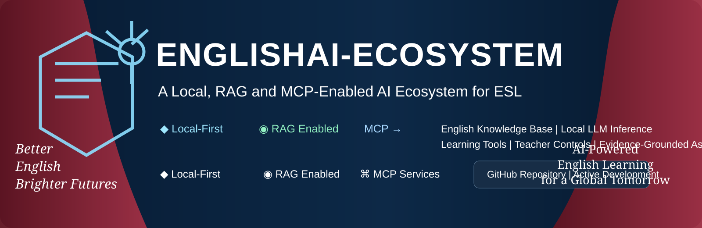

Grammar Coach
Understand rules, compare structures, and practise with level-aware exercises.

One learning environment for grammar, vocabulary, reading, writing, assessment and guided practice — designed for English as a second or additional language.
Understand rules, compare structures, and practise with level-aware exercises.
Get explanations for grammar, vocabulary, clarity and organisation while keeping your own voice.
Work through passages with vocabulary support, comprehension questions and evidence.
Learn words in context with examples, recall activities and personalised review.
Short diagnostic and formative activities to identify strengths and areas for improvement.
Connect approved English resources and specialist capabilities through controlled interfaces.
Authorised English learning materials.
Structured, searchable and traceable content.
Relevant evidence retrieved for each task.
Context-aware tutoring and generation.
Specialist learning capabilities.
Feedback, revision and improvement.